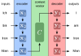
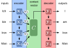
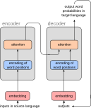
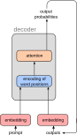

- Self-supervised learning: a form of unsupervised learning in which not humans but the data itself provides the supervision for the learning.
- Sequence prediction: given an existing sequence (observation) with its elements (attributes), predict the next element of the sequence (output value).
- Two prominent application examples.
- Translation: The input sequence is the text in one language, the output sequence is the same text but in a different language.
- Text generation:The input sequence is a prompt, the output sequence is the continuation of the prompt.
Task
Given a sequence of words in one language, predict a sequence of words in another language.
Challenges

Source: Adapted from CS 198-126: Lecture 14 - Transformers and Attention
Attention
Learn the importance of each word in context using weights wi.
Advantages

Source: Adapted from CS 198-126: Lecture 14 - Transformers and Attention
Attention is all you need (2017).
Every predicted word depends on two types of input:
- The full sequence in the source language.
- The already generated (partial) sequence in the target language.

Every predicted word depends only on the words preceding it, including the prompt.

P(Rain) = 0.5
P(rain | weather report) = 0.8
P(rain | weather report, clouds) = 0.9
The relationships between sequences and probabilities for the next word are learned from vast amounts of text.
P(angry | I, had, no, ...) = 0.001
P(tired | I, had, no, ...) = 0.01 "context"
P(yellow | I, had, no, ...) = 0.0001
If P(tired) is greater than all other probabilities, then predict "tired".
Task: Given a sequence of words, generate the next word.

While the text is being generated, attention is paid to different parts of the input.
How much attention each word in the input receives is learned during training.
This approach enables interactions across long text segments.
- To build an algorithm that can predict the next element in a sequence we use self-supervised learning (target values are provided by the data itself):
- The observation is the input sequence. The attributes of the observation are the individual elements of the sequence. The target value is the next element in the sequence.
- Each predicted element is added to the observation before the next element is predicted.
- Relationships between preceding elements and the next probable element are learned.
- When using attention, it is also learned how important a preceding element is. This enables longe range interactions between elements in the input sequence and the target value.
- As primary application examples for sequence prediction we discussed machine translation and text generation.
- The architecture of neural nets for sequence prediction is called transformer. For text translation it consists of an encoder and a decoder, for text generation it is decoder only.